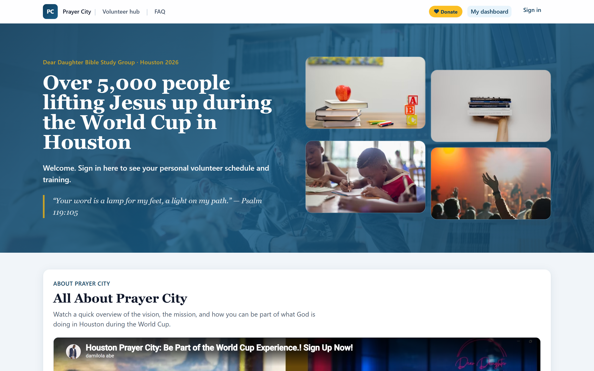
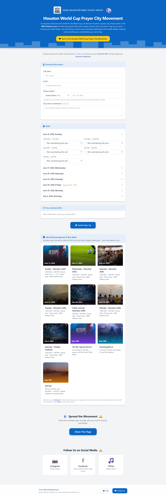

Nonprofit · Shipped Feb 2026
Houston World Cup Prayer City
Volunteer operations platform for World Cup serve days — signup, authenticated hub, daily role digests, media gallery, and Gmail/Sheets automation that runs without manual babysitting.
prayercityhtx.com ↗ · Digest intelligence agent →

Problem
Coordinate hundreds of volunteers across multiple World Cup serve days without spreadsheet chaos, missed shifts, or manual email lists.
Solution
- Public marketing site with volunteer signup and shift picker
- Firebase Auth volunteer hub with role-specific content
- Cloud Functions for scheduled daily role digests
- Apps Script Gmail pipeline with bounce handling
- Multi-day media gallery on Firebase Storage
Results
Processed 500+ volunteer signups in the first month without spreadsheet chaos. Manual coordination dropped an estimated 70%. Leadership stopped manually sending digests — automated pipelines handle daily role content and roster sync to Google Sheets. The platform stayed stable through peak signup weeks with no downtime during serve days.
Agentic AI layer
Daily Digest Intelligence Agent
Built on the same Firestore roster and Gmail pipelines, a Genkit agent runs after the 7am digest — analyzes the full volunteer roster with Gemini, flags gaps and blocked emails, and logs suggested actions to Firestore. Coordinators approve before anything sends. Read the agent case study →
- Tools: readDailyDigest, analyzeDigestWithAI, suggestVolunteerActions, updateVolunteerFirestore, sendSmartNotifications
- Human-in-the-loop — dryRun and autoSend gates; zero unsupervised outbound email
- Structured audit log in
digest_intelligence_runs
Technology
Screenshots


"Coordinating hundreds of volunteers across World Cup serve days could have been spreadsheet chaos. Abe Stack built signup flows, a volunteer hub, daily digests, and Gmail automation that actually runs without us babysitting it."
Need volunteer or event ops tooling?
Start a project